A pool that empties out by evening, a market that only happens on Saturdays, a river with a poet's name attached to it. Mohor Kutir asks very little of your day.
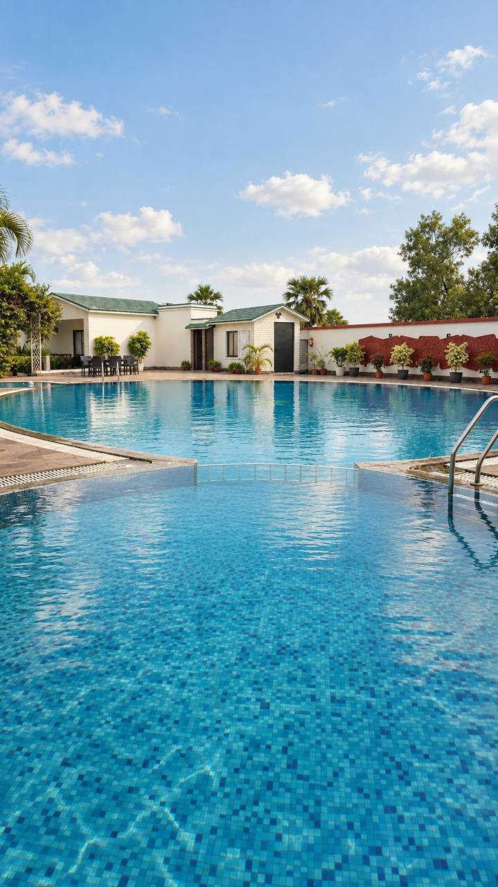
A long blue-tiled pool bordered by palms, sunbeds through the afternoon and low lighting by evening. Ixora and sunflowers line the walkways — planted, not landscaped in from outside.
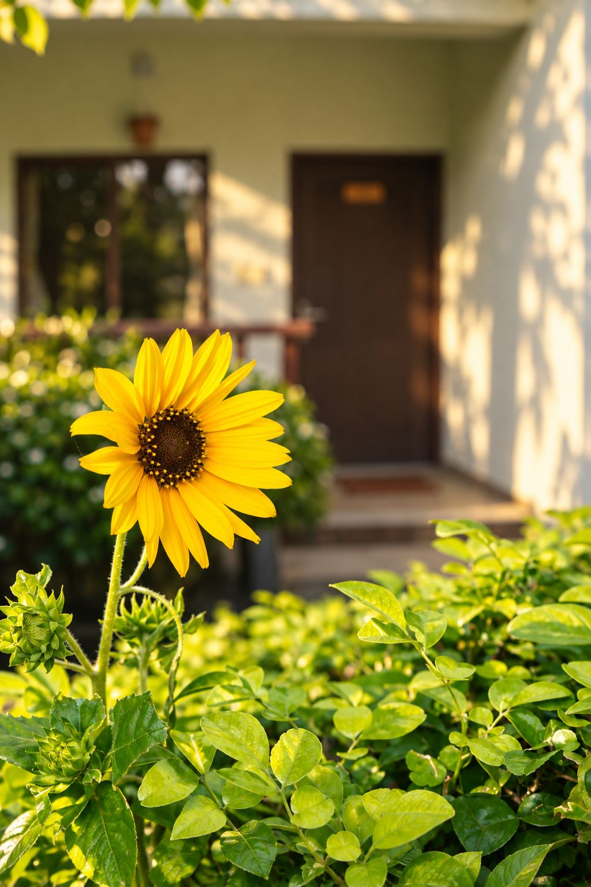
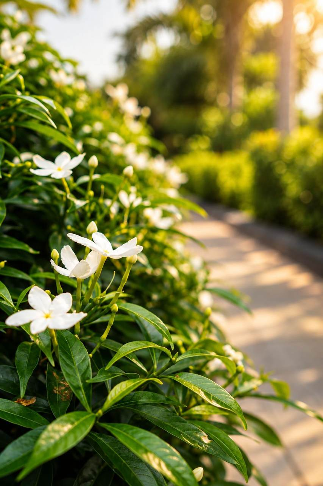
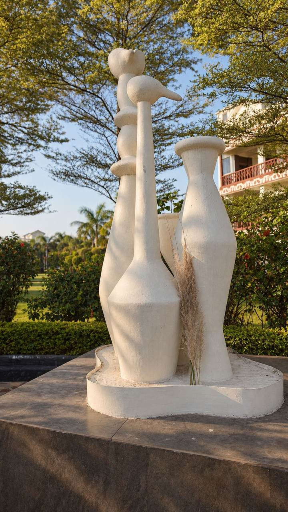
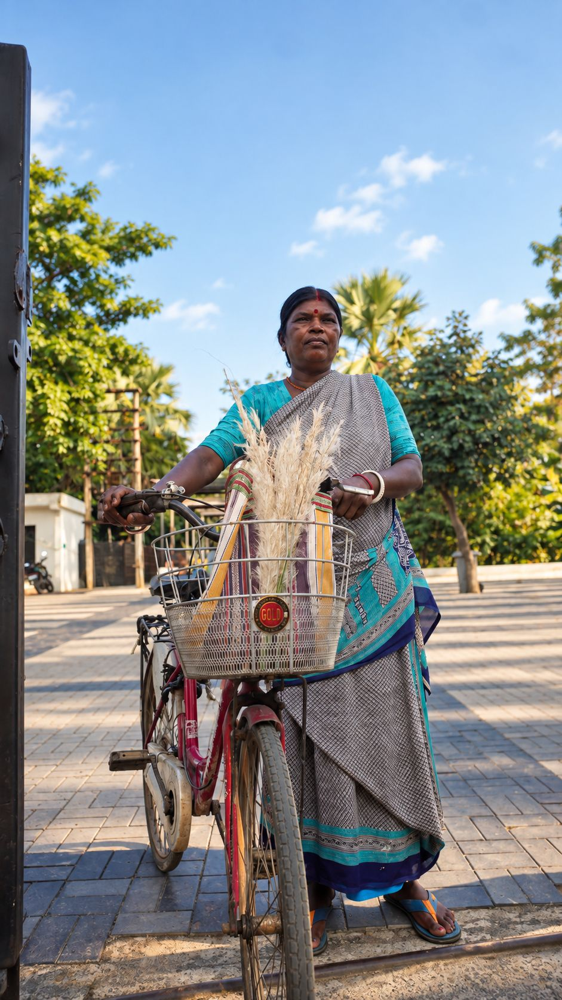
Every Saturday afternoon, Santhal artisans lay out kantha embroidery and terracotta jewellery on the sandy banks of the Kopai, a few minutes from the resort. Baul singers move between the stalls with their ektara, and a smaller Sunday-morning haat catches anyone who missed it.
The fuller story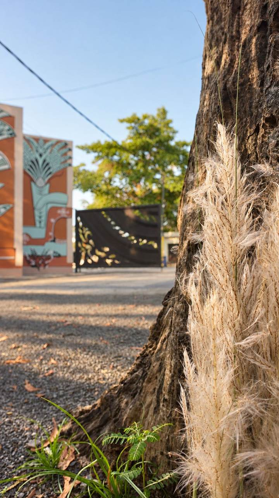
Through autumn, plumes of kaash phul — wild pampas grass — catch the evening light along the property's edges, the same white-gold that signals Durga Puja is close across all of Bengal.
No spa menu, no scheduled wellness — just a balcony that catches the sunset, a verandah for reading, and rooms far enough apart that quiet is the default rather than an amenity.
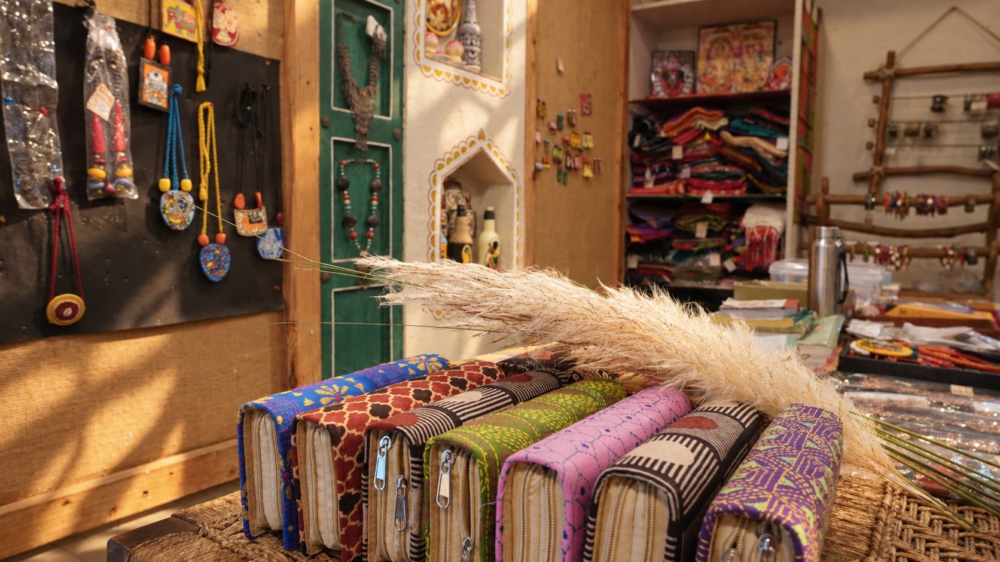
A small shop just off the lobby, stocked the way a Santiniketan haat stall would be — hand-block prints, kantha embroidery and terracotta jewellery, alongside clothing cut and dyed by artisans working within the district. Nothing here is brought in from elsewhere; it is the same craft the Sonajhuri haat and the resort's own terracotta walls are made of, packed up to travel home with you.
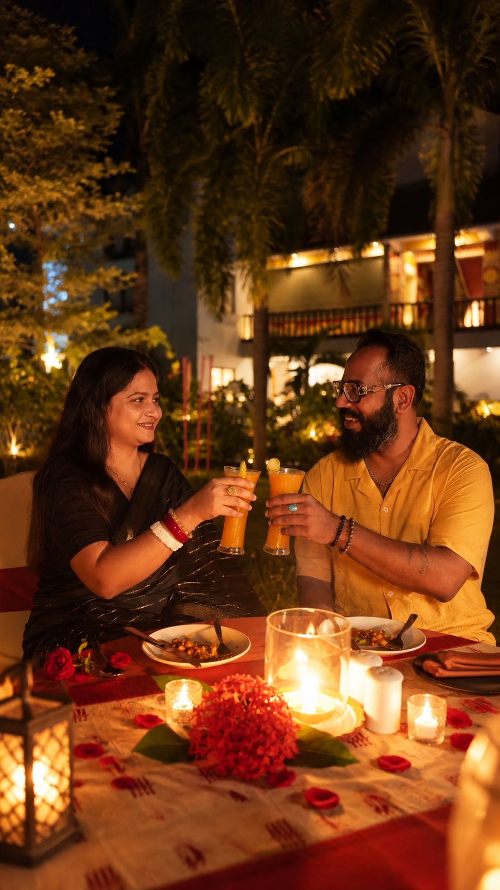
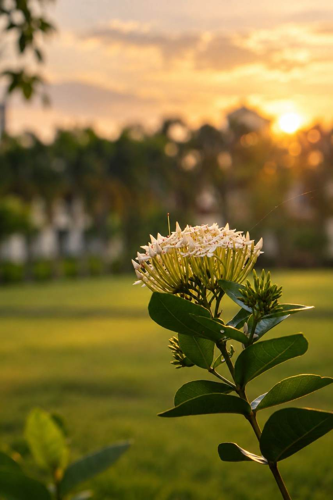
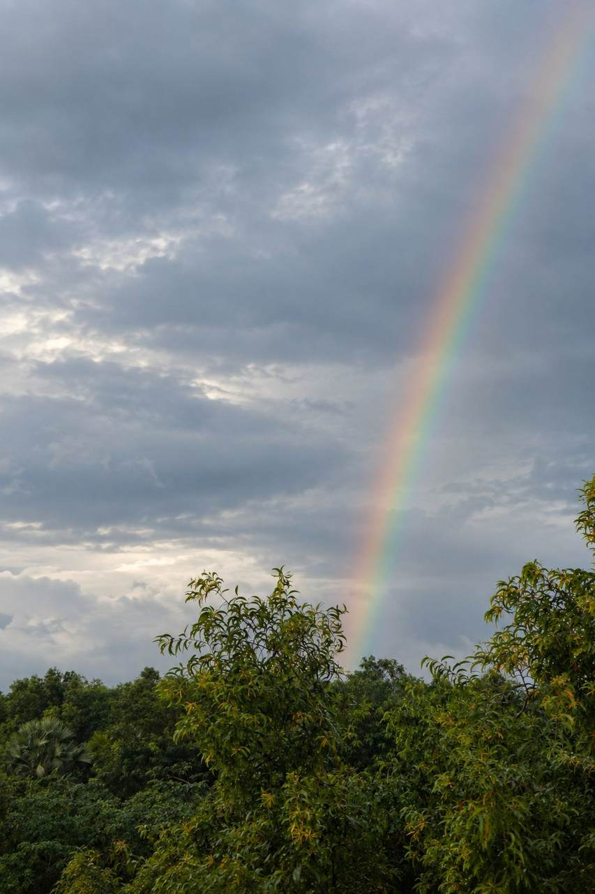
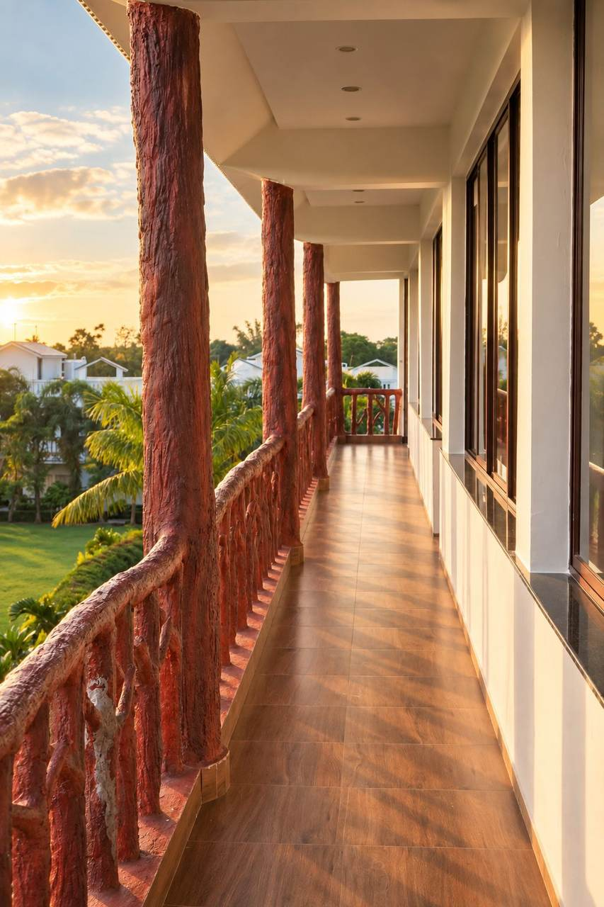
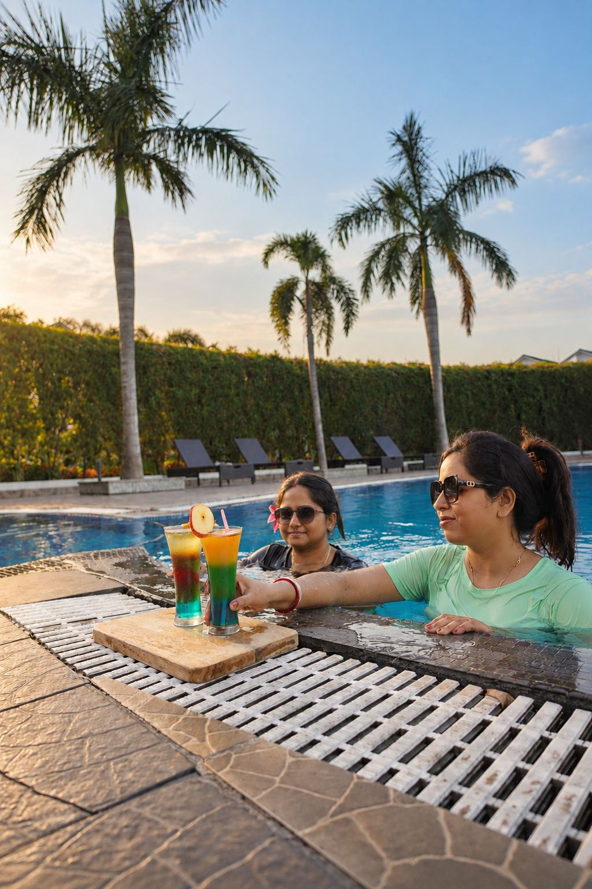
Village walks, a Saturday trip to Sonajhuri, or simply an extra hour by the pool — write ahead and it will be waiting when you arrive.